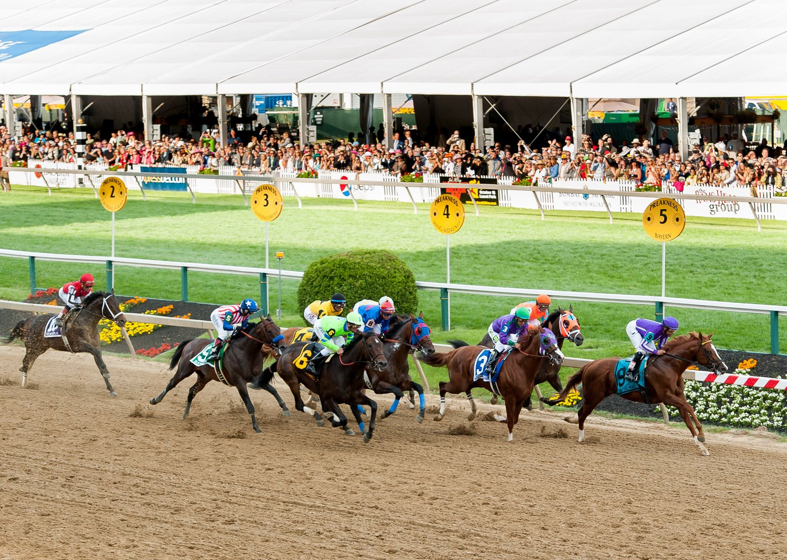

L'Intouchable, un outsider con argumentos para el Quinté+ de Enghien
El trotón de Tanguy Devouassoux, con el 14, vuelve al enganche en el Prix des Buttes Chaumont, Quinté+ del domingo 4 de octubre en Enghien, con su entrenador convencido de su estado físico.

La salida está fijada a las 13.55 y la prueba abre la reunión como R1C1. En la lista de participantes, L'Intouchable aparece como uno de esos nombres que conviene no descartar por lo que dicen sus últimas actuaciones, que no reflejan lo que ha llegado a enseñar.
Es un caballo duro en el esfuerzo. En el arranque de su carrera dejó señales de calidad: batió a ejemplares de un nivel claramente superior, entre ellos Lord du Loiron, Lover Man y Lara du Goutier. Después llegó un bache prolongado del que el hijo de Quatre Juillet aún no ha salido del todo.
Su última salida resume esa irregularidad. Iba en cabeza, aunque tenso, cuando cometió una falta de aire a la entrada de la penúltima curva y acabó descalificado.
Tanguy Devouassoux, entrenador y driver, explica las condiciones del regreso: "L'Intouchable vuelve al enganche y no irá desherrado, porque no puedo permitirme hacerlo en cada carrera". El matiz importa en el trote, donde correr sin herraduras suele buscar un extra de rendimiento, y esta vez no lo tendrá.
Aun así, el preparador se muestra confiado. "Está en muy buena condición física y no es incapaz de hacerse con un quinto puesto a una cotización muy alta", añade. Para el apostante del Quinté+, ese quinto puesto es justo la frontera que cuenta.
La lectura es sencilla: si recupera la versión que le vio ganar a rivales de más nivel, tiene recursos para colarse en la combinación; si vuelve la tensión que le costó la última carrera, se quedará fuera. Devouassoux deja abierta la puerta a una segunda oportunidad: "Si no es esta vez, habrá que seguirlo en la siguiente".
— Redacción de Galope al Día